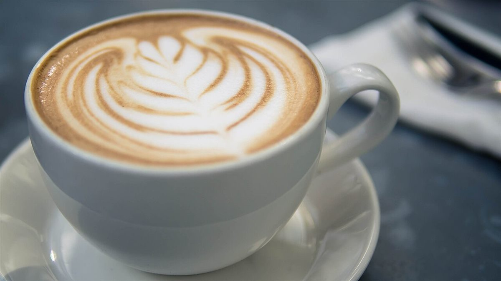

型A
ハート
ミルクを注いで、ひとつ。まるい線でおさめる型。

カフェ / 新潟県新発田市
新潟県新発田市のカフェ「COCOLATTE Cafe」のご案内ページです。営業時間やメニューなど、詳しいことは準備中。まずはInstagramをのぞいてみてください。

制作側の連想
店名の由来は分かりません。制作側は「LATTE」という言葉から、カップの上に描く模様を連想し、このページを「型紙帖」の体裁にしました。これは制作側の連想で、お店の理念・由来とは無関係です。お店がラテアートを提供しているかどうかも分かりません。写真はすべてフリー素材のイメージです。
型紙帖(イメージ)
ミルクを注いで、ひとつ。まるい線でおさめる型。
小刻みに重ねて、中央に一本。葉のような型。

丸みの先に首を伸ばす型。鳥のような形。

型紙のいらない一杯。ただ黒く、まあるく。

ご案内
| 所在地 | 新潟県新発田市中央町3丁目1-1 |
|---|---|
| 電話 | なし |
| 営業時間 | 準備中 |
| 定休日 | 準備中 |
| ご予約 | 準備中 |
| 駐車場 | 準備中 |
| SNS | Instagram @cocolatte_cafe8 |